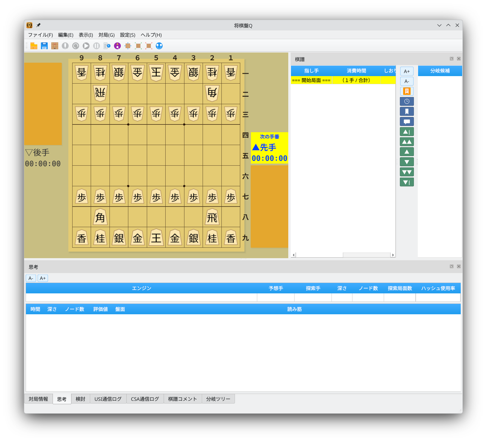
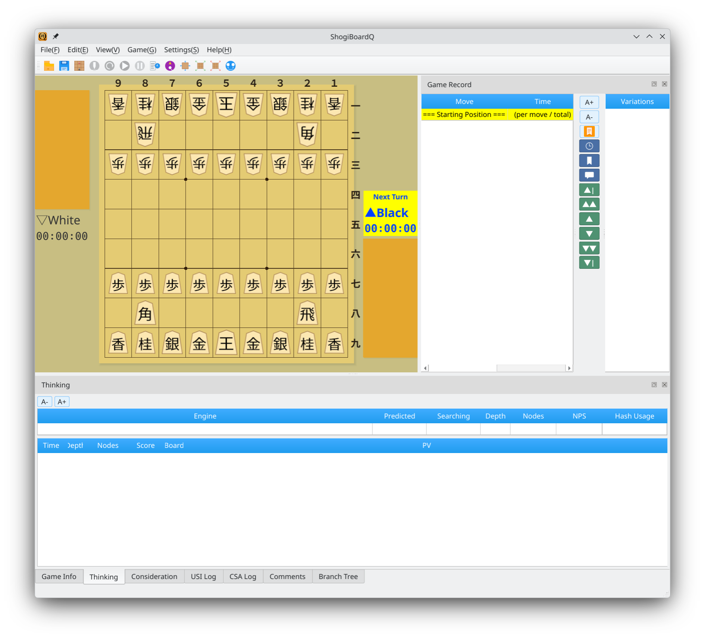

Switch between Japanese and English in the language settings
Screenshots show the Japanese interface unless otherwise noted.
Menus, buttons, tabs, and other interface elements are displayed in Japanese
In the Japanese interface, the menu bar, game record area, engine information tabs, game information, and other interface elements are displayed in Japanese.

Japanese UI: menus, tabs, and game record area in Japanese
Switch to the English interface to display UI elements in English
The English interface displays menus such as File, Edit, View, Game, Settings, and Help, and tabs such as Game Info, Thinking, Consideration, and Branch Tree in English.

English UI: menus, tabs, and game record area in English
Change the language from the Settings menu
Choose Settings → Language to select a language. In the Japanese interface, this menu is labeled 設定 → 言語.
After selecting a language, restart the application to apply it. Menus, dialogs, tab names, buttons, and other interface elements are then displayed in the selected language.